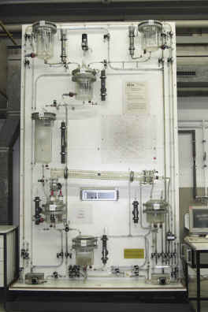
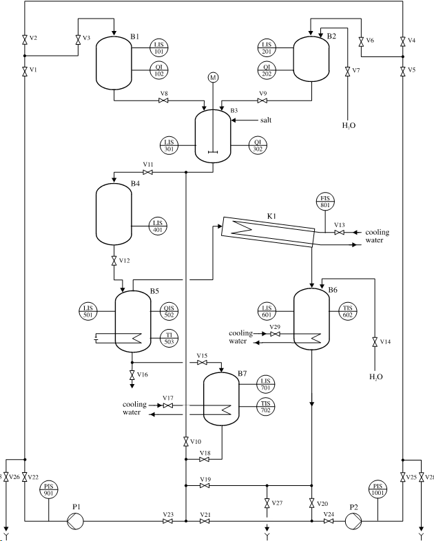
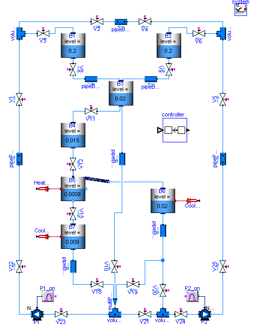

The process under consideration is an evaporation plant for a student lab at the Process Control Laboratory (AST) of the University of Dortmund that evaporates a water sodium chloride mixture so that a higher concentrated solution is produced. The task of the students is to learn how to program the process control system. A picture of the batch plant is shown in the figure below.

The flow sheet diagram is shown in the next figure.

Pure water from tank B1 and concentrated sodium chloride solution from tank B2 are mixed in a mixing tank B3. After buffering in tank B4 the mixture flows to the evaporator B5. Here the water sodium chloride mixture is evaporated until the desired con-centration is reached. The steam is condensed in the condenser K1 and cooled afterwards in the cooling tank B6. The concentrated solution is also led to a cooling tank B7. The cooled fluids are pumped back to the charging vessels by the pumps P1 and P2. Be-tween the tanks several valves are present that are regulated by a central control system.
| Name | Description |
|---|---|
| Test of used tank models |
 Modelica_Fluid.Examples.AST_BatchPlant.BatchPlant_StandardWater
Modelica_Fluid.Examples.AST_BatchPlant.BatchPlant_StandardWater
Extends from Modelica.Icons.Example (Icon for an example model).
| Name | Description |
|---|---|
| replaceable package BatchMedium | Component media |
| pipeDiameter | [m] |
| Name | Description |
|---|---|
| replaceable package BatchMedium | Component media |